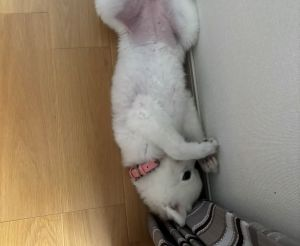
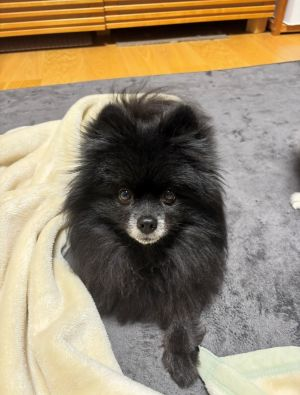
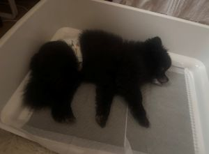
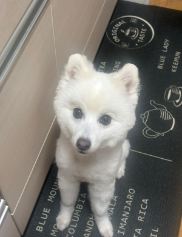
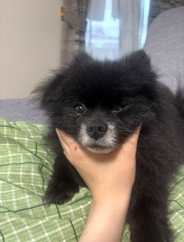
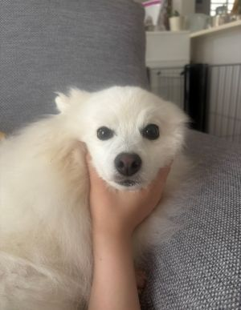

- トップ >
- しぇるころの日常
更新情報
定期更新！しぇるころの日常をアップしてます♪
7/11

今日の更新はしぇるです！この日もとっても暑かったのですが大学から帰るとしぇるちゃんは床で寝ていました(≧◇≦)写真を撮ろうとスマホを向けると恥ずかしいのか顔を隠していました（笑）
7/8

今日の更新はころりんです！ころりんはしぇるちゃんよりも早めにサマーカットをしたのですが気づいたらこんなに毛がのびてふわふわになっていました( ﾟДﾟ)！夏はまだまだこれからが本番2回目のサマーカットが必要そうです＾＾
7/3

今日の更新はころりんです！普段はリビングかベッドで寝ているころりんですが、朝起きるところりんがベッドにいなくて探してみるとなんとトイレで寝ていました(≧◇≦)暑くなってきたから涼しいところを求めてトイレまでたどり着いたのでしょうか？？真相は謎に包まれていますが健やかに眠るころりんでした♪
7/1

今日の更新はしぇるです！暑くなってきたのでサマーカットにしました！毛が短くなってさっぱりしました☆彡これで今年の猛暑も乗り切ります♪
6/26

今日の更新はころりんです！普段は顔を触られると気になってじっとできないころりんくんですが、今日は眠たかったのか大人しく写真を撮らせてくれました♡ちょっと不服そうな顔が癖になります^^
6/24

今日の更新はしぇるです！いつもダルがらみをするとウザがられてどこかにいってしまうしぇるちゃんですが、この日は何をしても逃げなかったので顔をつかんでみました(*^^*)このままじっとしていて目を閉じてうとうとしてました💤